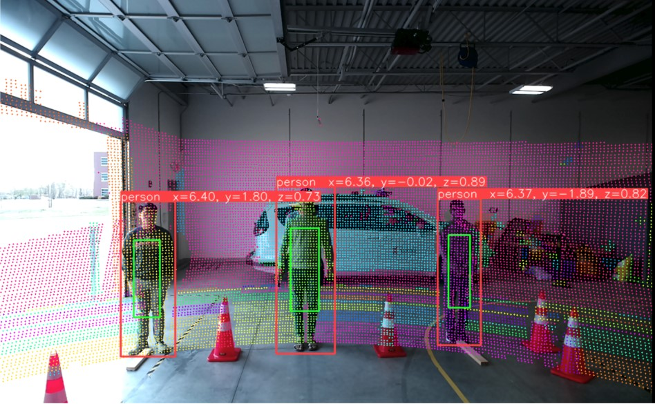
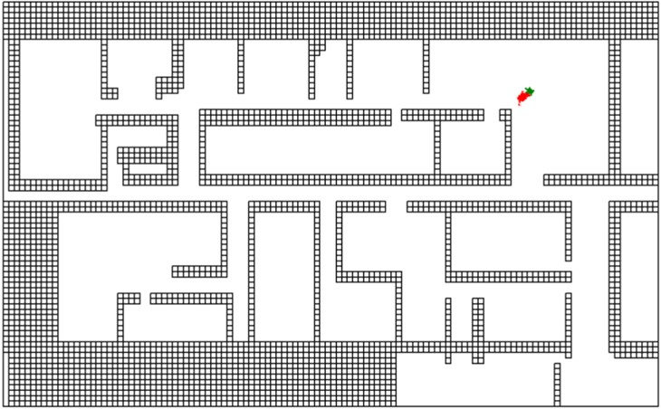
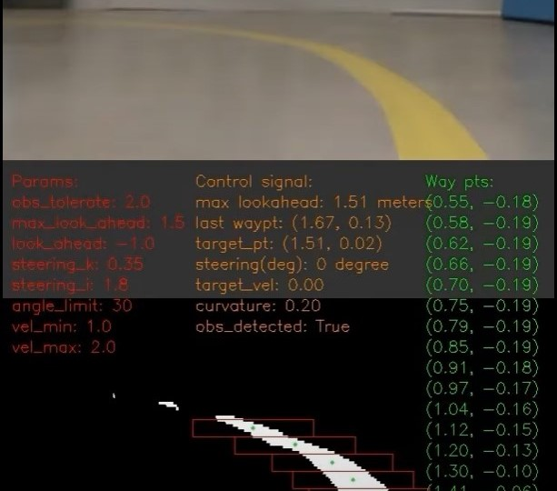
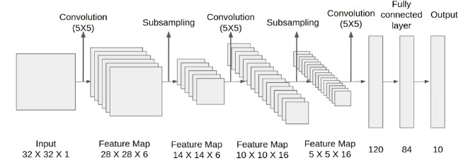
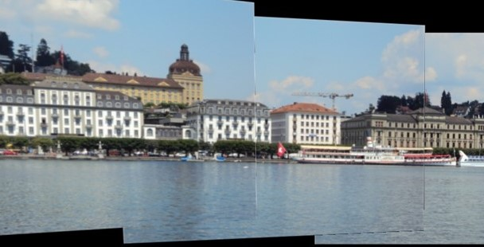
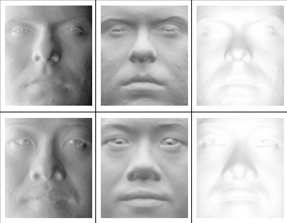

Hello! I'm
Chu-Lin
Interested in Robotics & Computer Vision
I hold a Master of Engineering in Autonomy & Robotics from University of Illinois Urbana-Champaign, where I developed SLAM-based localization, multi-object tracking, and LiDAR-camera fusion to enhance perception in autonomous vehicles/mobile robotics.
My expertise lies in software development for robotics and AI, with extensive experience in C++, Python, CUDA, ROS, Linux, and deep learning frameworks like PyTorch and TensorFlow.
Learn More
My Projects

SLAM & Multi-Object Tracking on Autonomous Vehicle
Description of Project 1

Monte Carlo Localization based on ROS with Lidar Simulation
Description of Project 2

Lane Detection System on F1 Tenth Car
Description of Project 3

CNNs Based on CUDA and C++
Description of Project 4

Multiple Images Stitching
Description of Project 5

3D Reconstruction based on Shape from Shading
Description of Project 6